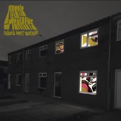
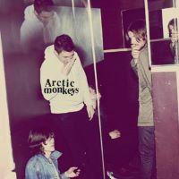
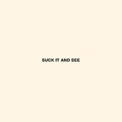
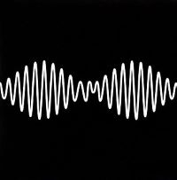
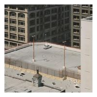

the arctic monkeys are a rock band from sheffield, uk, founded in 2002.
the members are jamie cook, matt helders, nick o'malley and alex turner
whatever people say i am, that's what i'm not
post-britpop, 2006
- the view from the afternoon (3:38)
- i bet you look good on the dancefloor (2:35)
- fake tales of san francisco (2:57)
- dancing shoes (2:21)
- you propably couldn't see for the lights but you were staring straight at me (2:10)
- still take you home (2:53)
- riot van (2:14)
- red light indicates doors are secured (2:23)
- mardy bum (2:55)
- perhaps vampires is a bit strong but... (4:28)
- when the sun goes down (3:20)
- from the ritz to the rubble (3:12)
- a certain romance (5:31)
|

favourite worst nightmare
garage rock, 2007
- brianstorm (2:52)
- teddy picker (2:40)
- d is for dangerous (2:14)
- balaclava (2:47)
- fluorescent adolescent (2:53)
- only ones who know (3:01)
- do me a favour (3:25)
- this house is a circus (3:09)
- if you were there, beware (4:34)
- the bad thing (2:23)
- old yellow bricks (3:07)
- 505 (4:13)
|

humbug
psychedelic rock, 2009
- my propeller (3:27)
- crying lightning (3:43)
- dangerous animals (3:30)
- secret door (3:43)
- potion approaching (3:32)
- fire and the thud (3:57)
- cornerstone (3:17)
- dance little liar (4:43)
- pretty visitors (3:40)
- the jeweller's hands (5:43)
|

suck it and see
guitar pop, 2011
- she's thunderstorms (3:54)
- black treacle (3:35)
- brick by brick (2:59)
- the hellcat spangled shalalala (3:00)
- don't sit down 'caus i've moved your chair (3:03)
- library pictures (2:22)
- all my own stunts (3:52)
- reckless serenade (2:42)
- piledriver waltz (3:23)
- love is a laserquest (3:11)
- suck it and see (3:45)
- that's where you're wrong (4:16)
|

am
indie rock, 2013
- do i wanna know? (4:31)
- r u mine? (3:21)
- one for the road (3:26)
- arabella (3:27)
- i want it all (3:04)
- no. 1 party anthem (4:03)
- mad sounds (3:35)
- fireside (3:01)
- piledriver waltz (3:23)
- why'd you only call me when you're high (2:41)
- snap out of it (3:12)
- knee socks (4:17)
- i wanna be yours (3:04)
|
tranquilty base hotel & casino
psychedelic pop, 2016
- star treatment (5:54)
- one point perspective (3:28)
- american sports (2:38)
- tranquilty base hotel & casino (3:31)
- golden trunks (2:53)
- four out of five (5:12)
- the world's first ever monster truck front flip (3:00)
- science fiction (3:05)
- she looks like fun (3:02)
- batphone (4:31)
- the ultracheese (3:37)
|

the car
art rock, 2011
- there'd better be a mirrorball (4:25)
- i ain't quite where i think i am (3:11)
- sculptures of anything goes (3:59)
- jet skis on the moat (3:17)
- body paint (4:50)
- the car (3:18)
- big ideas (3:57)
- hello you (4:04)
- mr schwartz (3:30)
- perfect sense (2:47)
|